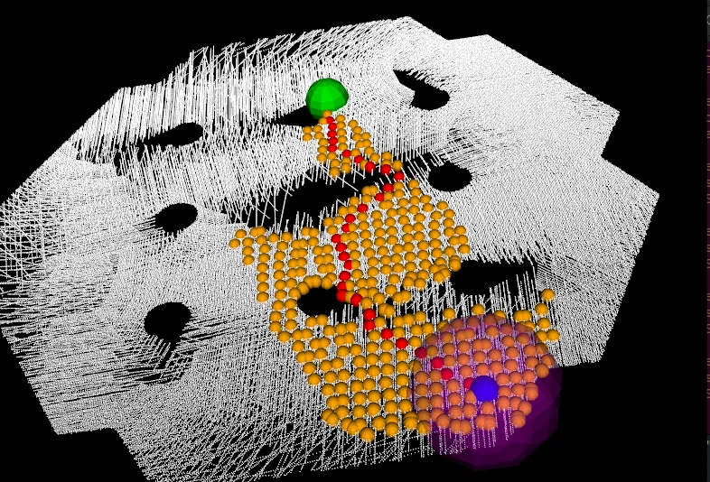
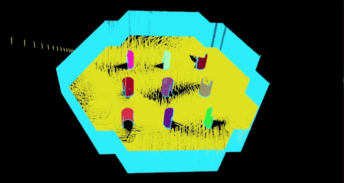
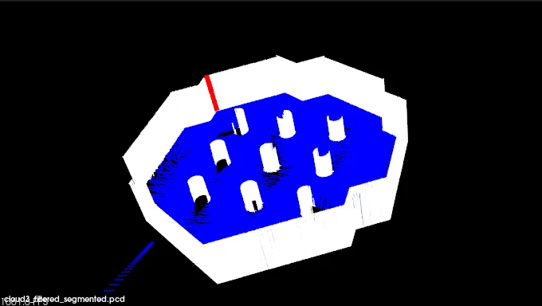
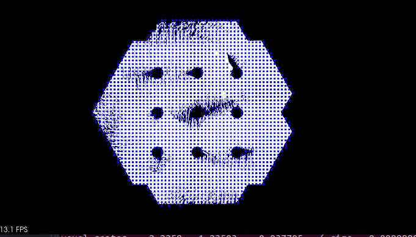

ACTUAL PROJECT OUTPUTActual project output.
The problem
A raw 3D point cloud needs geometric interpretation before a planner can reason about ground, structural obstacles, and a possible route.
My contribution
I implemented point-cloud segmentation, navigation preprocessing, and A* path planning for a client project.
What I delivered
- Segmented ground, cylindrical pillars, and remaining wall structures.
- Traversable-area processing using surface normals, RANSAC, outlier rejection, and octree representation.
- A* shortest-path computation with cost-map and path visualizations.
Engineering decisions
- Use geometric structure to distinguish ground and obstacles.
- Build the spatial representation before applying graph search.
- Visualize segmentation and planning stages so errors can be inspected at their source.
Actual project outputs



Outcome & scope
A completed point-cloud pipeline with segmented structural layers and a visualized shortest path.
The demonstrated result is point-cloud segmentation and planning. It is not a deployed autonomous navigation stack or a depth-camera metrology system.
Skills strengthened
This project developed my ability to turn geometric data into a representation that a downstream algorithm can use, and to debug the stages visually.